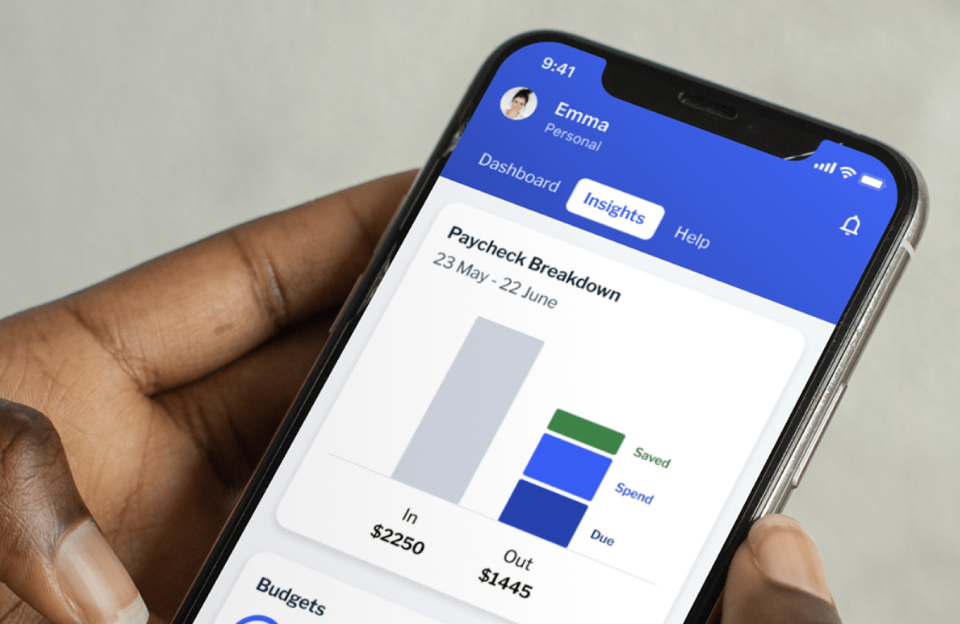
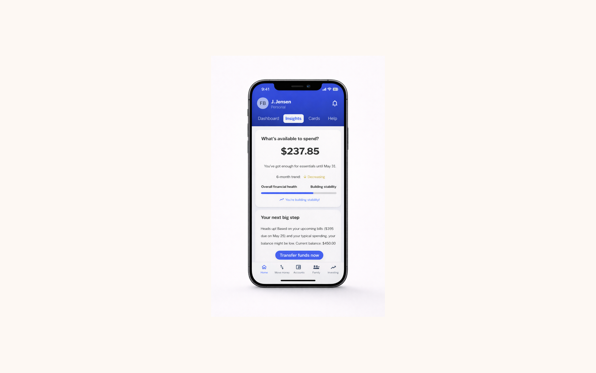
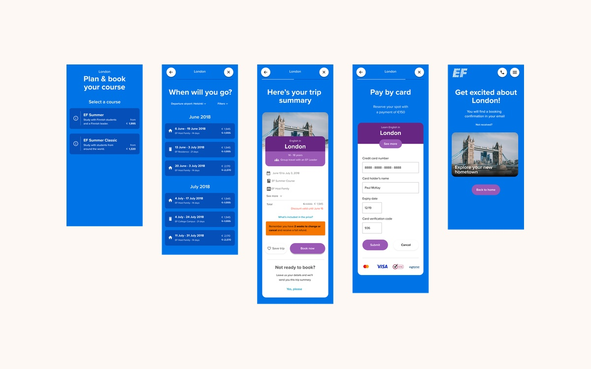
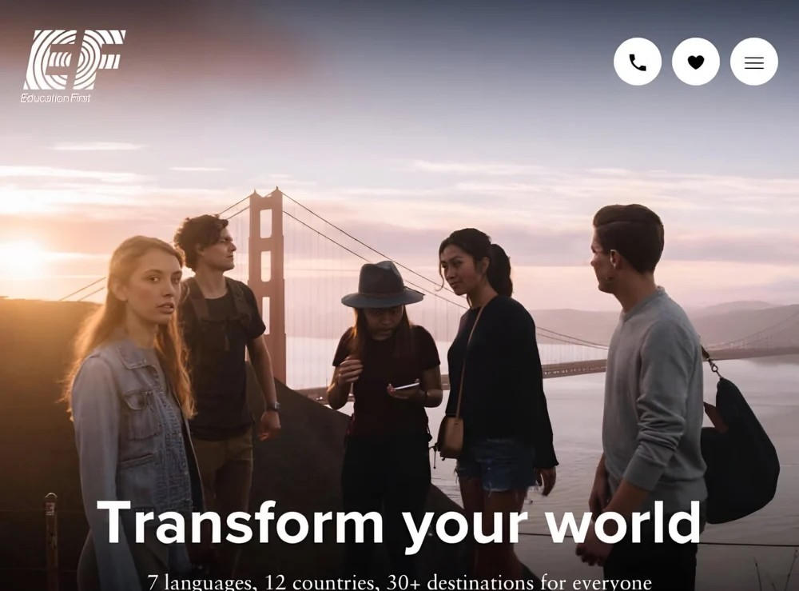

Revamping Retail Banking
A complete redesign to streamline navigation, improve iOS UX, and boost customer satisfaction scores.
Read case study →
I'm a Sr. UX Designer & Researcher based in The Hague with 12+ years of experience crafting human-centered solutions across education, travel, banking, health, and engineering. I love turning complex problems into intuitive experiences.

A complete redesign to streamline navigation, improve iOS UX, and boost customer satisfaction scores.
Read case study →
Designing an AI-enhanced experience that increases engagement and supports smarter financial decisions.
Read case study →
Designing an intuitive booking experience for language programs abroad for kids and parents.
Read case study →
Created seamless customer journeys and helped align internal operations to drive bookings.
Read case study →
I grew up in Kansas City, Missouri, raised by two hardworking parents who reluctantly let me study abroad in Germany when I was 17. That experience sparked a lifelong love of exploring different cultures and perspectives.
In college, I developed a strong foundation in art, digital design, and research, while exploring international experiences in Italy, the Netherlands, and Uganda. These opportunities shaped my passion for crafting human-centered solutions.
After graduating, I moved to Switzerland where I lived for ten years before settling in the Netherlands in 2022. When I'm not designing, you'll find me hiking, cooking, or planning my next adventure.
I'm always open to a coffee chat, in real life or on video